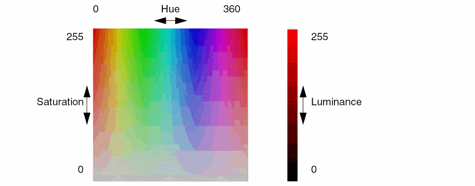

18
Report Commands
Report commands let you generate reports.
Color maps are used to graphically display computational results from congestion analysis, CMP analysis, and yield analysis.
The commands are presented in alphabetic order:
- report_design_stats
- report_fill
- report_grids
- report_net_stats
- report_routing_stats
- report_rs
- report_via_stackability
- report_via_stats
- report_wire_spacing_stats
- report_wire_width_stats
- Color Map Display Commands
report_design_stats
report_design_stats
[ -file s_fileName ]
Outputs a summary of layer, component, and connectivity statistics for the design in the active window to the Transcript area, and optionally to a file.
Arguments
|
Outputs the design statistics to the given file. By default, no file is created. |
Example
The following example outputs the design statistics for active window to the Transcript area and file small8000.txt.
report_design_stats -file small8000.txt
The following is an example of design statistics reported:
# Design Statistics Summary: small8000/small8000_routed/layout
# Layer Summary
# layers: 14, routing layers: 5
# Component Summary
# total components: 8306, unplaced: 0, placed: 8306, fixed: 0
# core comp: 8102, unplaced: 0, placed: 8102, fixed: 0
# pad comp: 197, unplaced: 0, placed: 197, fixed: 0
# block/ring comp: 3, unplaced: 0, placed: 3, fixed: 0
# other comp: 4, unplaced: 0, placed: 4, fixed: 0
# Connectivity Summary
# pins: 614
# total nets: 8458, unrouted: 55, routed: 8403, single pin or undetermined:0
# signal: 8456, unrouted: 55, routed: 8401, single pin or undetermined:0
# power: 1, unrouted: 0, routed: 1, single pin or undetermined:0
# ground: 1, unrouted: 0, routed: 1, single pin or undetermined:0
# clock: 0, unrouted: 0, routed: 0, single pin or undetermined:0
# other: 0, unrouted: 0, routed: 0, single pin or undetermined:0
# terminals: 45090
# End of Design Statistics Summary
The single pin or undetermined category represents nets that contain at most one real terminal. For example, a net with two pins, one real and one logical (no geometries associated with it) would be included in this category.
Related Information
report_fill
report_fill
[ -layer {all | {s_layer…}} ]
[ -all | -set d_setObj | -region {f_xlo f_ylo f_xhi f_yhi} ]
[ -print_number [ true | false ] ]
[ -print_area [ true | false ] ]
[ -tcl_list [ true | false ] ]
Reports the number of fill shapes and, optionally, the area, in micron2, occupied by the fill shapes of each type:
-
Floating fill (
fillpurpose) -
Notch fill (
gapFillpurpose) -
Power/Ground connected fill (
fillpurpose)
For power and ground nets, each net is reported separately.
You can optionally limit the report to a given region, or to nets in a set, otherwise fill shapes in the entire design are reported for all layers or the given layers only.
Arguments
Example
The following is an example of the values reported for this command:
report_fill -region [get_window_area] -layer Metal2
+------+-------------+-------+-----------+-------+-------+---------------+
| Layer| Floating |GapFill| VDD_PLL | VDD | VSS | Total |
+------+-------------+-------+-----------+-------+-------+---------------+
| |Num Area|NumArea| NumArea|NumArea|NumArea| Num Area|
+------+-------------+-------+-----------+-------+-------+---------------+
|Metal2| 64 453| 0 0| 0 0| 0 0| 0 0| 64 453|
+------+-------------+-------+-----------+-------+-------+---------------+
| TOTAL| 64 453| 0 0| 0 0| 0 0| 0 0| 64 453|
+------+-------------+-------+-----------+-------+-------+---------------+
Related Information
report_grids
report_grids
[ -file s_fileName ]
Outputs the x- and y-step values, the x- and y-offset values and the manufacturing grid for each metal and via layer in the active window to the Transcript area, and optionally to a file.
Arguments
|
Outputs the grid information to the given file. By default, no file is created. |
Example
The following is an example of the values reported for this command:
--------------------------------------------------------------------------------
Layer X Step Y Step X Offset Y Offset Mfg Grid
--------------------------------------------------------------------------------
PC 0.4 0.4 0 0 0
CA 0.4 0.4 0 0 0
Metal1 0.4 0.4 0 0 0
V1 0.4 0.4 0 0 0
Metal2 0.4 0.4 0 0 0
Related Information
report_net_stats
report_net_stats
{ -set d_setObj | -net {s_netName…} | -summary }
[ -file s_fileName ]
[ -omit_transcript ]
[ -include_extents ]
Generates a Net Statistics report on the nets in the given list or set, or a Net Term Count report for all nets (-summary).
The Net Statistics report is output to the Transcript area and, optionally, to a file, and reports either the net count (-omit_transcript), or the following information:
- Number of terms (logical points on nets that can be connected from outside)
- Number of inst terms (logical points on instances that can be connected to a net)
- Number of guides (opens in nets)
- Number of steiners (pins that are not associated with a terminal or instance and are used to implement a virtual pin for routing control)
- Total, horizontal, and vertical wire length for each layer
- Number of vias for each layer
- Number of route segments for each layer
The Net Term Count report gives the number of nets grouped by the number of terms per net.
Arguments
Example
The following example outputs the net statistics for the nets in the HL1 highlight set to the Transcript area and the HL1nets.txt file.
report_net_stats -file HL1nets.txt -set [get_highlight -name HL1]
The following is an example of net statistics reported for one of the nets in the set:
Net Statistics:
Net: TDSP_CORE_INST_dmov_inc Cellview: small8000/small8000_routed/layout
# Terms # Inst Terms # Guides # Steiners
0 29 0 0
Layer Wirelength HWirelength VWirelength # Vias (Down) # Route Segments
Total 1804.4 1100.1 704.3 99 93
met1 88.5 88.5 0 0 12
met2 476.2 12 464.2 45 42
met3 633.1 631.2 1.9 34 28
met4 238.2 0 238.2 12 7
met5 368.4 368.4 0 8 4
The following is an example of a Net Term Count report.
Net Term Count Report (12 nets):
1: 4 2: 2 3: 1 4: 3 5: 2
12
Related Information
report_routing_stats
report_routing_stats [ -setd_setObj| -net {s_netName…} ] [ -files_fileName] [ -summary ] [ -subtotals [ -silent] ]
Generates a report on the nets in the given list or set, or the entire design. The report is output to the console, Transcript area and, optionally, to a file. The following information is included:
-
Routing Summary
Includes the number of nets, routes and guides found and the percentage of routing that has been completed. - Routing History
-
Layer Details
Reports by layer down-via counts, the lengths for guides, and detail and global routes by direction.
You can optionally create an environment variable package containing the statistics (-subtotals).
Arguments
|
Specifies a file to output the routing statistics to. By default, no file is created. |
|
|
Limits reporting to the nets in the given list. The Routing Summary and Layer Details for the nets in the list are output. By default, all nets are reported. |
|
|
Limits reporting to the nets in the given set. The Routing Summary and Layer Details for the nets in the set are output. By default, all nets are reported. |
|
|
Suppresses all console and log file output. This is useful to streamline processing when running scripts. |
|
|
Creates an environment variable package containing the statistics for the entire design. For information about the environment variable package, refer to “Reading Statistics from an Environment Variable Package”. |
|
|
Outputs only the Routing Summary. If no arguments are given, the Routing Summary, Routing History, and Layer Details for the entire design are all output. |
Reading Statistics from an Environment Variable Package
When you use the -subtotals argument, an environment variable package is created that contains the statistics for the entire design. The package contains two child packages, count and stats.
| Child Environment Variables | Type | Description |
|---|---|---|
For example, to access the data given layers metal1, metal2 and metal3, use the following:
set net_count [getvar -cmd report_routing_stats count.nets]
set route_count [getvar -cmd report_routing_stats count.routes]
set guide_count [getvar -cmd report_routing_stats count.guide_count]
set completed_pct [getvar -cmd report_routing_stats count.completion_pct]
set metal1_length [getvar -cmd report_routing_stats stats.metal1.wire_length]
set metal2_down_vias [getvar -cmd report_routing_stats stats.metal2.down_vias]
Example
The following example requests routing statistics and shows the output.
report_routing_stats
Nets = 8458 Routes = 29222 Guides = 0
Completion = 100.00%
| ROUTING HISTORY ==============
| Pass | |
| Name | No. | Max Mem |
|------------------------------|
| GRoute | 1 | 72.3 |
| GRoute | 2 | 72.3 |
| GRoute | 3 | 72.3 |
| GRoute | 4 | 72.3 |
|------------------------------|
= LAYER DETAILS
========================================================================================
| | | Total | Horizontal | Vertical | Guide | Down Vias |
| Layer |Dir| Length | Detail |Global| Detail|Global| Length| Total | Guide|
|--------------------------------------------------------------------------------------|
| met1 | H | 45223.77 | 44390.36 | 0.00 | 833.41 | 0.00 | 0.00 | 0 | 0 |
| met2 | V | 193789.39 | 7112.48 | 0.00 | 186676.91 | 0.00 | 0.00 | 27803 | 0 |
| met3 | H | 325697.86 | 318464.60 | 0.00 | 7233.26 | 0.00 | 0.00 | 23392 | 0 |
| met4 | V | 306787.93 | 1987.13 | 0.00 | 304800.80 | 0.00 | 0.00 | 8265 | 0 |
| met5 | H | 254937.34 | 254694.66 | 0.00 | 242.68 | 0.00 | 0.00 | 3205 | 0 |
|--------------------------------------------------------------------------------------|
| Totals | | 1126436.29 | 626649.23 | 0.00 | 499787.06 | 0.00 | 0.00 | 62665 | 0 |
| Percent| | 100.00 | 55.63 | 0.00 | 44.37 | 0.00 | 0.00 | | |
========================================================================================
Related Information
report_rs
report_rs [ -all | -names_rsName| -nets_netName| -setd_setObj] [ -filenames_fileName] [ -match [ true | false ] ] [ -routes ]
Outputs to the Transcript area route spec information (width, spacing, pitch, routability of metal layers and via layers) by layer, and/or route spec names. If no arguments are given, the layer information is given for the global net default route spec.
Arguments
Example
The following example requests the names of all of the used route specs in the active cellview and shows the output.
report_rs -all
"LEFDefaultRouteSpec" "wideRouteSpec"
Related Information
report_via_stackability
report_via_stackability [ -vias_viaName[ -via2s_viaName[ -rot1 {R0 | R90 | R180 | R270 | MY | MYR90 | MX | MXR90} ] [ -rot2 {R0 | R90 | R180 | R270 | MY | MYR90 | MX | MXR90} ] ] ]
Reports the stackability of vias in the active cellview or for specific vias. When no argument is given, each master via instance is listed with the following attributes:
Arguments
Example
The following is an example of partial data output by Space-based Router and Chip Optimizer after a report_via_stackability command is issued:
Via56_stack_west topOfStack true bottomOfStack false
Via34_stack_west topOfStack true bottomOfStack false
Via56_stack_east topOfStack true bottomOfStack false
report_via_stats
report_via_stats [ -window_idi_windowID] [ -all | -region {f_xlof_ylof_xhif_yhi} | -setd_setObj] [ -do_via_layers {s_layerName…} ] [ -exclude_setd_setObj] [ -exclude_net {s_netName…} ] [ -exclude_type {[power] [ground] [clock]} ] [ -exclude_via_pin [ true | false ] ] [ -output_pins_only [ true | false ] ] [ -report_level {summary | basic | detail} ] [ -files_fileName] [ -show_all_columns [ true | false ] ]
Outputs statistics for vias in a set or the selected set, within a given region or in the entire design to the Transcript area, and optionally to a file. If the cutClass constraint is defined, the report includes a cut class name column for each cut count group.
minDualExtension constraint must be set.Arguments
Example
The following is an example of a summary via report.
# Design: tdsp_library/tdsp/layout
Date: Fri Feb 03 2006 Time: 13:05:44
Elapsed Time: 0.1 seconds Memory Usage: 0.0 MB
remaster_via completed in = 0.1s (elapsed), using 0.1s/0.0s/0.1s (user/kernel/total CPU).
+----------------------------------------------------------+
|Layer|Count| 1-cut | 2-cut |
| | | Enclosure | Enclosure |
| | | Min | Larger | Min | Larger |
+----------------------------------------------------------+
|Via1 | 69| 22 (31.9%)|0 (0.0%)|47 (68.1%)|0 (0.0%)|
|Via2 | 81| 81 (100.0%)|0 (0.0%)| 0 (0.0%)|0 (0.0%)|
|----------------------------------------------------------|
|Total| 150|103 (68.7%)|0 (0.0%)|47 (31.3%)|0 (0.0%)|
+----------------------------------------------------------+
The following is an example of a basic via report.
# Design: tdsp_library/tdsp/layout
Date: Fri Feb 03 2006 Time: 13:06:05
Elapsed Time: 0.0 seconds Memory Usage: 0.0 MB
report_via_stats completed in = 0.0s (elapsed), using 0.0s/0.0s/0.0s (user/kernel/total CPU).
+--------------------------------------------------------------------------+
|Layer| Enclosure |Count| 1-cut | 2-cut |
| | (Lower Upper) | | Enclosure | Enclosure |
| | | | Min | Larger | Min | Larger |
+--------------------------------------------------------------------------+
|Via1 | | 69| 22 (31.9%)|0 (0.0%)|47 (68.1%)|0 (0.0%)|
| |0.4x0.4 0.4x0.4| 22| 22 (100.0%)|0 (0.0%)| 0 (0.0%)|0 (0.0%)|
| |0.4x0.9 0.4x0.9| 24| 0 (0.0%)|0 (0.0%)|13 (54.2%)|0 (0.0%)|
| |0.9x0.4 0.9x0.4| 23| 0 (0.0%)|0 (0.0%)|13 (56.5%)|0 (0.0%)|
| |0.4x0.9 0.4x0.9| 24| 0 (0.0%)|0 (0.0%)|11 (45.8%)|0 (0.0%)|
| |0.9x0.4 0.9x0.4| 23| 0 (0.0%)|0 (0.0%)|10 (43.5%)|0 (0.0%)|
|Via2 | | 81| 81 (100.0%)|0 (0.0%)| 0 (0.0%)|0 (0.0%)|
| |0.4x0.5 0.4x0.4| 21| 9 (42.9%)|0 (0.0%)| 0 (0.0%)|0 (0.0%)|
| |0.4x0.4 0.4x0.4| 60| 60 (100.0%)|0 (0.0%)| 0 (0.0%)|0 (0.0%)|
| |0.4x0.5 0.4x0.4| 21| 12 (57.1%)|0 (0.0%)| 0 (0.0%)|0 (0.0%)|
|--------------------------------------------------------------------------|
|Total| | 150|103 (68.7%)|0 (0.0%)|47 (31.3%)|0 (0.0%)|
+--------------------------------------------------------------------------+
The following is an example of a detail via report.
# Design: tdsp_library/tdsp/layout
Date: Fri Feb 03 2006 Time: 13:06:12
Elapsed Time: 0.0 seconds Memory Usage: 0.0 MB
report_via_stats completed in = 0.0s (elapsed), using 0.0s/0.0s/0.0s (user/kernel/total CPU).
+-------------------------------------------------------------------------------+
|Layer|Via Master| Enclosure |Cnt| 1-cut | 2-cut |
| | | (Lower Upper) | | Enclosure | Enclosure |
| | | | | Min | Larger | Min | Larger |
+-------------------------------------------------------------------------------+
|Via1 | | | 69|22 (31.9%)|0 (0.0%)|47 (68.1%)|0 (0.0%)|
| |M2M1 |0.4x0.4 0.4x0.4| 22| 22| 0| 0| |
| |M2M1_north|0.4x0.9 0.4x0.9| 13| 0| 0| 13| 0|
| |M2M1_west |0.9x0.4 0.9x0.4| 13| 0| 0| 13| 0|
| |M2M1_south|0.4x0.9 0.4x0.9| 11| 0| 0| 11| 0|
| |M2M1_east |0.9x0.4 0.9x0.4| 10| 0| 0| 10| 0|
|Via2 | | | 81|81(100.0%)|0 (0.0%)| 0 (0.0%)|0 (0.0%)|
| |Via23south|0.4x0.5 0.4x0.4| 9| 9| 0| 0| 0|
| |M3M2 |0.4x0.4 0.4x0.4| 60| 60| 0| 0| 0|
| |Via23north|0.4x0.5 0.4x0.4| 12| 12| 0| 0| 0|
|-------------------------------------------------------------------------------|
|Total| | |150|103(68.7%)|0 (0.0%)|47 (31.3%)|0 (0.0%)|
+-------------------------------------------------------------------------------+
Related Information
report_wire_spacing_stats
report_wire_spacing_stats
[ -all | -region {f_xlo f_ylo f_xhi f_yhi} | -set d_setObj ]
[ -exclude_type {[power][ground][clock]} ]
[ -file s_fileName ]
[ -ignore_blockages [ true | false ] ]
[ -ignore_boundary [ true | false ] ]
[ -layers {s_layerName…} ]
[ -length_threshold f_userunit ]
[ -reported_space {f_spacing…} ]
[ -top_level_only ]
Reports statistics on spacing between nets in the entire design, in a given set, or in a given region. This is useful for quantifying spread results.
The statistics include the following:
By default, the space columns report spacings for facing edges that are minSpacing, minSpacing*2, minSpacing*3, and greater than minSpacing*3. You can change the reported spacing groups using -reported_space.
Only edge lengths that are greater than the minWidth constraint for the layer will be reported. You can optionally change the length threshold using the -length_threshold argument.
Arguments
Example
The following example shows how spacings are reported.
For this example, the following is the default report (assuming a minSpacing of 0.10) for the M1 layer:
+-------+-------------+-------------+-------------+------------+------------+
| Layer |space <=0.10 |space <=0.20 |space <=0.30 |space >0.30 | Total |
+-------+-------------+-------------+-------------+------------+------------+
|M1 | 0.60 (11%) | 1.00 (18%) | 0 (0%) | 4.00 (71%) | 5.6 (100%) |
+-------+-------------+-------------+-------------+------------+------------+
| TOTAL | 0.60 (11%) | 1.00 (18%) | 0 (0%) | 4.00 (71%) | 5.6 (100%) |
+-------+-------------+-------------+-------------+------------+------------+
The space columns report spacings for facing edges that are minSpacing, minSpacing*2, minSpacing*3, and greater than minSpacing*3.
report_wire_width_stats
report_wire_width_stats
[ -all | -region {f_xlo f_ylo f_xhi f_yhi} | -set d_setObj ]
[ -exclude_type {[power][ground][clock]} ]
[ -file s_fileName ]
[ -layers {s_layerName…} ]
Reports statistics on wire widths for route segments in the entire design, in the given set, or wholly within the given region. This is useful for quantifying widen_wire results. Each gapFill shape (used for wire widening) can only belong to one route segment.
The statistics include the following:
- The number of route segments (NRS) for each width and layer
- The length of route segments (LRS) for each width and layer
- The total number of route segments by layer
- The total length of route segments by layer
-
The average width of the reported route segments
This gives a quick measure for comparison when widening wires.
Arguments
Example
The following example shows how wire widths are reported.
For this example, the following would be reported for the three route segments:
report_wire_width_stats -set [get_selection_set]
NRS = Number of Route Segments
LRS = Length of Route Segments
+-------+-----------+-----------+-----------+-----------+
| Layer | 0.14 | 0.16 | 0.18 | Total |
+-------+-----------+-----------+-----------+-----------+
| |NRS LRS |NRS LRS |NRS LRS |NRS LRS |
+-------+-----------+-----------+-----------+-----------+
|M1 | 1 0.52| 0 0| 0 0| 1 0.52|
|M2 | 0 0| 1 1.08| 1 1.28| 2 2.36|
+-------+-----------+-----------+-----------+-----------+
| TOTAL | 1 0.52| 1 1.08| 1 1.28| 3 2.88|
+-------+-----------+-----------+-----------+-----------+
The average width is .165
create_map_coloring
create_map_coloring -names_coloringName-type {HSV [[ -startHuei_0to360][ -stopHuei_0to360] [ -startSaturationi_0to255][ -stopSaturationi_0to255] [ -startLuminancei_0to255][ -stopLuminancei_0to255] [ -startValuef_value][ -stopValuef_value] ] | threshold [ -ranges {{f_startValuef_stopValuei_redi_greeni_blue}…} ]}
Creates map colorings to use when displaying color maps.
Two types of color mapping are available: HSV and threshold.
-
HSV (Hue Saturation Value)
HSV color mapping represents color as a continuous change of hue, saturation and luminance (or brightness) as the data value increases. You specify the range for each of these color components. By default, the computed range of data values is mapped to each range of given components to determine the color for each map tile. You can optionally limit the range of data values to color.- Hue specifies the color from red (0), through yellows, greens, blues, magenta and finally back to red (360), completing the color wheel.
- Saturation specifies the color intensity from gray (0) to vivid (255). For a consistent saturation level, specify the same values for start and stop saturation.
-
Luminance chooses the color brightness from light (0) to dark (255). For consistent brightness, specify the same values for start and stop luminance
.

-
Threshold
Threshold color mapping assigns a color, given by red, green and blue (RGB) components, for a range of data values. For more color detail, a greater number of ranges must be specified. The following is a sampling of colors with their RGB representations:
Color Red Green Blue
For example, three ranges are given in the following:-ranges {50 60 255 0 0 60 70 0 255 0 70 80 0 0 255}
Data in the first range (50-60) are colored red (255 0 0), in the second range (60-70) green (0 255 0), and in the last range (70-80) blue (0 0 255). Data outside of the given ranges (0-50, 80 and above) will not be colored.Use the Select Color form to assist you in choosing HSV and RGB settings. To access this form, right-click a layer or object name in the Layer Object Display Panel, then click the Red-Green-Blue color bars on the right hand side of the pop-up. The Select Color form appears. Change the HSV or RGB values on the right side of the form to see the color that is represented by the values chosen.
Arguments
Example
Two color maps, thermalMap and thermalMapBands, are predefined. The following examples illustrate how these would be set using create_map_coloring.
-
thermalMapcreate_map_coloring -name thermalMap -type HSV -startHue 180 -stopHue 0 -startSaturation 125 -stopSaturation 255 -startLuminance 125 -stopLuminance 225
This HSV mapping colors tiles by linearly mapping the minimum and maximum values for tiles to the color map scale starting with blue (180) at the minimum value, through green, and to red (0) at the maximum value. Saturation (opacity) and luminance are scaled in a similar manner. -
thermalMapBandscreate_map_coloring -name thermalMapBands -type threshold -ranges {60 80 0 0 255 80 95 0 255 0 95 100 255 0 0}
This threshold mapping colors tiles with values of 60-80 in blue, values of 80-95 in green, and values of 95-100 in red. Tiles with values under 60 are not colored.
Related Information
create_map_tile
create_map_tile -patterns_patternName[ -line {horizontal [ -alignment {center | top | bottom} ] | {vertical [ -alignment {center | left | right} ]} [ -lineStyle {solidline | dashedline | dottedline | dashdottedline | dashdotdottedline} ] [ -lineWidthi_pixel] | [ -rect [ -fillStyle {solid | nofill | crosshatch | diagcrosshatch | negdiaghatch | posdiaghatch | horizhatch | verthatch} ] [ -scaleFactorf_multiplier] ] [ -opacityi_0to255]
Creates and sets parameters for a map tile which determines whether a line or a rectangle will be used to represent the status of cells. If neither -line nor -rect is given, a solid rectangle of the cell size is used.
Arguments
Example
The following command creates a map tile named tilevl that is a vertical dashed line on the left side of the cell.
create_map_tile -pattern tilevl -line vertical -alignment left -lineStyle dashedline
Related Information
display_color_map
display_color_map
{ {-name s_computationName | -names {s_computationName…} }
[ -tile s_patternName ]
[ -coloring s_coloringName ]
[ -add ]
[ -composer Compare ]}
| -off
Displays a color map or turns off all color maps. You must specify the computation to color map from either a recent analysis or loaded using load_color_map. In addition, you specify the display features such as the tile and coloring to use, and whether the new color map should replace the existing color maps or be added to the existing color maps.
Using the Layer Object Display Panel visibility settings, you can see a composite map for multiple layers, the color map for a single layer, or you can hide the color mapping on all layers.
Arguments
|
Layers the new color map over existing color maps. If this argument is not given, existing color maps are removed. |
||
|
Specifies the name of the map coloring to use. There are two predefined map colorings: |
||
|
Displays the difference between the given computation results, instead of the computation results. For example, you can use this to visually compare the congestion results before and after re-routing. |
||
|
Specifies the names of an active computation or a loaded computation to color map. Active computations are results for analyses that have already been run in the current session for the active design. Refer to
A loaded computation is the name of a previously saved computation that you loaded using |
||
|
Specifies the name of the map tile (lines or rectangles) to use. By default, a filled rectangle is used. You can customize tiles using |
||
Table 18-1 lists computation names and the analysis that must be run on the current design to display the respective results with display_color_map.
Table 18-1 Color Map Computation Types
| Generated by | s_computationName |
|---|---|
Example
The following commands show composite color maps for HorizontalCellCongestion and ViaCongestion.
display_color_map -name HorizontalCellCongestion
display_color_map -name ViaCongestion -add
The following commands display a color map representing LeftEdgeCongestion using the default thermalMapBands color map and left-aligned line tiles.
create_map_tile -pattern linevl -line vertical -alignment left
display_color_map -name LeftEdgeCongestion -tile linevl -coloring thermalMapBands
Related Information
display_color_map_value
display_color_map_value [ -fonts_font] [ -sizei_fontSize] [ -colors_color] [ -rect [ true | false ] ] [ -name { HorizontalCellCongestion | VerticalCellCongestion | LeftEdgeCongestion | BottomEdgeCongestion | ViaCongestion | ChipAssembly | Density | Thickness | Hotspots | YldCell | YldVia | YldShort | YldOpen | YldRouting |s_computationName}] [ -regex_style [ true | false ] ]
Displays the value of the color map under the cursor until this action is canceled by the ESC key. You can optionally choose display characteristics for the value, including font, font size, color and the computation name.
Arguments
|
Specifies the name of the font to use for displaying the value. The default is |
|
|
Specifies the name of the computation results to display. The name can be an expression with wildcard characters, letting you restrict the search of multiple computation results. The file is scanned for the first computation name that matches the expression. Refer to Table 18-1 for a list of accepted names and “Pattern Matching” for guidelines on special characters that can be used. If this argument is not given, the first computation that was added to the color map will be applied. |
|
|
If set to |
|
|
Applies only when |
|
load_color_map
load_color_map -files_fileName[ -name {s_computationName} ] [ -regex_style [ true | false ] ]
Loads a file containing computation results, allowing you to color map results without re-running the analysis.
After loading data with this command, you must use display_color_map to display the color map for the computation results.
Arguments
|
Specifies the name of the file containing the computation results. |
|
|
Specifies the name of the computation results to load. The name can be an expression with wildcard characters, letting you load multiple computations from a single file. The file is scanned for computation names that match the expression. Refer to Table 18-1 for a list of accepted names and “Pattern Matching” for guidelines on special characters that can be used. If this argument is not given, all computations in the file are loaded.
To avoid conflict with a current analysis result, a computation loaded by this command is assigned a unique name in the format: viewName_computationName or viewName_computationName_i as needed for uniqueness. For example, |
|
|
By default and when set |
|
Example
The following command loads all computations from the file mycolormaps and a Space-based Router and Chip Optimizer response is shown.
load_color_map -file mycolormaps
The computation 'layout_ViaCongestion' was loaded
The computation 'layout_VerticalCellCongestion' was loaded
In this case, the file contained two computations, ViaCongestion and VerticalCellCongestion. To display these computations using default settings, you would use the following commands:
display_color_map -name layout_ViaCongestion
display_color_map -name layout_VerticalCellCongestion
Related Information
save_color_map
save_color_map
-file s_fileName
[ -name { HorizontalCellCongestion | VerticalCellCongestion
| LeftEdgeCongestion | BottomEdgeCongestion | ViaCongestion
| ChipAssembly | Density | Thickness | Hotspots
| YldCell | YldVia | YldShort | YldOpen | YldRouting } ]
[ -regex_style [ true | false ] ]
Saves computations for currently displayed color maps to a file, allowing you to color map results at a later time without running the analyses. Only computations that are currently displayed by display_color_map can be saved.
Arguments
|
Specifies the name of the computation results to save. The name can be an expression with wildcard characters, letting you save multiple computations to a single file. The currently displayed color maps are scanned for computation names that match the given string. Refer to Table 18-1 for a list of possible base names and “Pattern Matching” for guidelines on special characters that can be used. If this argument is not given, all currently displayed computations are saved. |
|
|
By default and when set |
|
Return Value
The following command saves all of the currently displayed computations to file colormap and the Space-based Router and Chip Optimizer response is shown.
save_color_map -file colormap
The computation 'HorizontalCellCongestion' was saved.
The computation 'VerticalCellCongestion' was saved.
The computation 'ViaCongestion' was saved.
In this case, three computations were saved.
Related Information
unload_color_map
unload_color_map
-name s_computationName
[ -regex_style [ true | false ] ]
Unloads one or more computations from memory. Only computations that had been loaded using load_color_map can be unloaded. Unloaded color maps will be removed from the display.
Arguments
|
Specifies the name of the computation results to unload. The name can be an expression with wildcard characters, letting you unload multiple computations to a single file. The currently loaded color maps are scanned for computation names that match the given string. Refer to Table 18-1 for a list of possible base names and “Pattern Matching” for guidelines on special characters that can be used. If this argument is not given, all currently loaded computation results are unloaded. |
|
|
By default and when set |
|
Example
The following command unloads all currently loaded computations with names ending in Congestion and a Space-based Router and Chip Optimizer response is shown.
unload_color_map -name *Congestion
The computation 'layout_VerticalCongestion' was unloaded.
The computation 'layout_HorizontalCongestion' was unloaded.
Related Information
Return to top